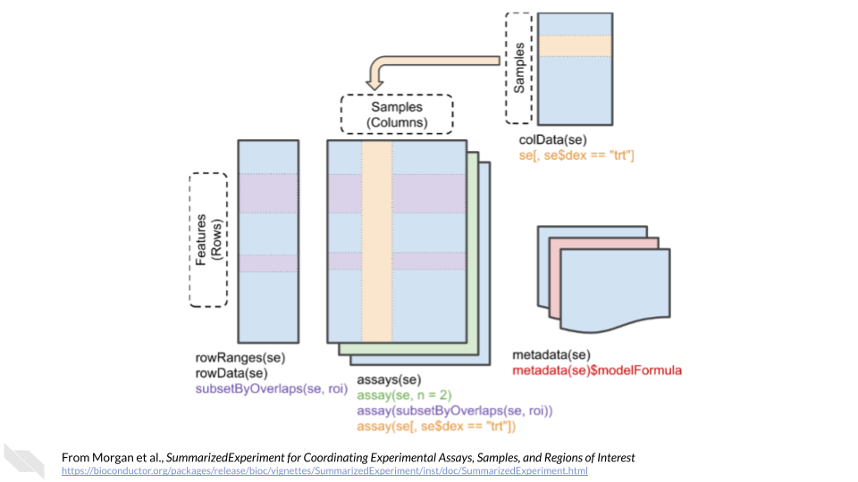

Chapter 5 The SummarizedExperiment class
5.1 Overview
One of the main strengths of using Bioconductor for bioinformatics is their data infrastructure. These data classes are built with genomics data in mind. This makes data compatible with different packages and/or methods. It also makes data easier to manipulate.
The SummarizedExperiment class is used to store rectangular matrices of experimental results, which are commonly produced by sequencing and microarray experiments. Each SummarizedExperiment stores observations of one or more samples, along with additional meta-data describing both the observations (features) and samples (phenotypes).
A key aspect of the SummarizedExperiment class is the coordination of the meta-data and assays when subsetting. For example, if you want to exclude a given sample you can do for both the meta-data and assay in one operation, which ensures the meta-data and observed data will remain in sync. Improperly accounting for meta and observational data has resulted in a number of incorrect results and retractions so this is a very desirable property.
SummarizedExperiment is a matrix-like container where rows represent features of interest (e.g. genes, transcripts, exons, etc.) and columns represent samples. The objects contain one or more assays, each represented by a matrix-like object of numeric or other mode. The rows of a SummarizedExperiment object represent features of interest. Information about these features is stored in a DataFrame object, accessible using the function rowData(). Each row of the DataFrame provides information on the feature in the corresponding row of the SummarizedExperiment object. Columns of the DataFrame represent different attributes of the features of interest, e.g., gene or transcript IDs, etc.

The above information comes directly from the vignette for SummarizedExperiment. Please check out their page for more information.
5.2 Exploring SummarizedExperiment
First, we will load the necessary packages.
# Install and load airway
# AnVIL::install(c("airway"))
library(airway)Load the gene expression data. The “airway” data is from an RNA-Seq experiment on four human airway smooth muscle cell lines treated with dexamethasone. You can learn more about the experiment in Himes (2014).
# Load the gene expression data
data(airway)assay() provides a matrix-like or list of matrix-like objects of identical dimension.
- rows: genes, genomic coordinates, etc.
- columns: samples, cells, etc.
assay_data <- assay(airway)
head(assay_data)## SRR1039508 SRR1039509 SRR1039512 SRR1039513 SRR1039516
## ENSG00000000003 679 448 873 408 1138
## ENSG00000000005 0 0 0 0 0
## ENSG00000000419 467 515 621 365 587
## ENSG00000000457 260 211 263 164 245
## ENSG00000000460 60 55 40 35 78
## ENSG00000000938 0 0 2 0 1
## SRR1039517 SRR1039520 SRR1039521
## ENSG00000000003 1047 770 572
## ENSG00000000005 0 0 0
## ENSG00000000419 799 417 508
## ENSG00000000457 331 233 229
## ENSG00000000460 63 76 60
## ENSG00000000938 0 0 0colData() provides annotations on each column, as a DataFrame. In other words, it provides descriptions of each sample.
colData(airway)## DataFrame with 8 rows and 9 columns
## SampleName cell dex albut Run avgLength
## <factor> <factor> <factor> <factor> <factor> <integer>
## SRR1039508 GSM1275862 N61311 untrt untrt SRR1039508 126
## SRR1039509 GSM1275863 N61311 trt untrt SRR1039509 126
## SRR1039512 GSM1275866 N052611 untrt untrt SRR1039512 126
## SRR1039513 GSM1275867 N052611 trt untrt SRR1039513 87
## SRR1039516 GSM1275870 N080611 untrt untrt SRR1039516 120
## SRR1039517 GSM1275871 N080611 trt untrt SRR1039517 126
## SRR1039520 GSM1275874 N061011 untrt untrt SRR1039520 101
## SRR1039521 GSM1275875 N061011 trt untrt SRR1039521 98
## Experiment Sample BioSample
## <factor> <factor> <factor>
## SRR1039508 SRX384345 SRS508568 SAMN02422669
## SRR1039509 SRX384346 SRS508567 SAMN02422675
## SRR1039512 SRX384349 SRS508571 SAMN02422678
## SRR1039513 SRX384350 SRS508572 SAMN02422670
## SRR1039516 SRX384353 SRS508575 SAMN02422682
## SRR1039517 SRX384354 SRS508576 SAMN02422673
## SRR1039520 SRX384357 SRS508579 SAMN02422683
## SRR1039521 SRX384358 SRS508580 SAMN02422677rowData() and / or rowRanges() provide annotations on each row.
rowRanges(): coordinates of gene / exons in transcripts / etc.rowData(): P-values and log-fold change of each gene after differential expression analysis.
rowRanges(airway)## GRangesList object of length 64102:
## $ENSG00000000003
## GRanges object with 17 ranges and 2 metadata columns:
## seqnames ranges strand | exon_id exon_name
## <Rle> <IRanges> <Rle> | <integer> <character>
## [1] X 99883667-99884983 - | 667145 ENSE00001459322
## [2] X 99885756-99885863 - | 667146 ENSE00000868868
## [3] X 99887482-99887565 - | 667147 ENSE00000401072
## [4] X 99887538-99887565 - | 667148 ENSE00001849132
## [5] X 99888402-99888536 - | 667149 ENSE00003554016
## ... ... ... ... . ... ...
## [13] X 99890555-99890743 - | 667156 ENSE00003512331
## [14] X 99891188-99891686 - | 667158 ENSE00001886883
## [15] X 99891605-99891803 - | 667159 ENSE00001855382
## [16] X 99891790-99892101 - | 667160 ENSE00001863395
## [17] X 99894942-99894988 - | 667161 ENSE00001828996
## -------
## seqinfo: 722 sequences (1 circular) from an unspecified genome
##
## ...
## <64101 more elements>metadata(): List of unstructured metadata describing the overall content of the object.
metadata(airway)## [[1]]
## Experiment data
## Experimenter name: Himes BE
## Laboratory: NA
## Contact information:
## Title: RNA-Seq transcriptome profiling identifies CRISPLD2 as a glucocorticoid responsive gene that modulates cytokine function in airway smooth muscle cells.
## URL: http://www.ncbi.nlm.nih.gov/pubmed/24926665
## PMIDs: 24926665
##
## Abstract: A 226 word abstract is available. Use 'abstract' method.Please see this vignette for more information.
5.3 Subsetting SummarizedExperiment
Often, you’ll find you want to subset your expression/count data. You can do this by selecting the samples (columns) or features/genes (rows) you want to keep.
# Collect the counts and sample data
raw_counts <- assay(airway)
sample_data <- colData(airway)
# Select samples 1 and 2
samples_1_2 <- raw_counts[, 1:2]
head(samples_1_2)## SRR1039508 SRR1039509
## ENSG00000000003 679 448
## ENSG00000000005 0 0
## ENSG00000000419 467 515
## ENSG00000000457 260 211
## ENSG00000000460 60 55
## ENSG00000000938 0 0# Select untreated samples
untrt_samples <- raw_counts[, sample_data$dex == "untrt"]
head(untrt_samples)## SRR1039508 SRR1039512 SRR1039516 SRR1039520
## ENSG00000000003 679 873 1138 770
## ENSG00000000005 0 0 0 0
## ENSG00000000419 467 621 587 417
## ENSG00000000457 260 263 245 233
## ENSG00000000460 60 40 78 76
## ENSG00000000938 0 2 1 0# Select features where mean expression > 0 across samples
nonzero_features <- raw_counts[rowMeans(raw_counts) > 0, ]
head(nonzero_features)## SRR1039508 SRR1039509 SRR1039512 SRR1039513 SRR1039516
## ENSG00000000003 679 448 873 408 1138
## ENSG00000000419 467 515 621 365 587
## ENSG00000000457 260 211 263 164 245
## ENSG00000000460 60 55 40 35 78
## ENSG00000000938 0 0 2 0 1
## ENSG00000000971 3251 3679 6177 4252 6721
## SRR1039517 SRR1039520 SRR1039521
## ENSG00000000003 1047 770 572
## ENSG00000000419 799 417 508
## ENSG00000000457 331 233 229
## ENSG00000000460 63 76 60
## ENSG00000000938 0 0 0
## ENSG00000000971 11027 5176 79955.4 Recap
# Learn more about the class
?SummarizedExperiment::`SummarizedExperiment-class`
# Browse vignettes and more
??SummarizedExperimentsessionInfo()## R version 4.1.3 (2022-03-10)
## Platform: x86_64-pc-linux-gnu (64-bit)
## Running under: Ubuntu 20.04.4 LTS
##
## Matrix products: default
## BLAS: /usr/lib/x86_64-linux-gnu/openblas-pthread/libblas.so.3
## LAPACK: /usr/lib/x86_64-linux-gnu/openblas-pthread/liblapack.so.3
##
## locale:
## [1] LC_CTYPE=en_US.UTF-8 LC_NUMERIC=C
## [3] LC_TIME=en_US.UTF-8 LC_COLLATE=en_US.UTF-8
## [5] LC_MONETARY=en_US.UTF-8 LC_MESSAGES=en_US.UTF-8
## [7] LC_PAPER=en_US.UTF-8 LC_NAME=C
## [9] LC_ADDRESS=C LC_TELEPHONE=C
## [11] LC_MEASUREMENT=en_US.UTF-8 LC_IDENTIFICATION=C
##
## attached base packages:
## [1] stats4 stats graphics grDevices utils datasets methods
## [8] base
##
## other attached packages:
## [1] airway_1.14.0 SummarizedExperiment_1.24.0
## [3] Biobase_2.54.0 GenomicRanges_1.46.1
## [5] GenomeInfoDb_1.30.1 IRanges_2.28.0
## [7] S4Vectors_0.32.4 BiocGenerics_0.40.0
## [9] MatrixGenerics_1.6.0 matrixStats_0.61.0
##
## loaded via a namespace (and not attached):
## [1] XVector_0.34.0 bslib_0.3.1 compiler_4.1.3
## [4] pillar_1.7.0 jquerylib_0.1.4 highr_0.9
## [7] zlibbioc_1.40.0 bitops_1.0-7 tools_4.1.3
## [10] digest_0.6.29 lattice_0.20-45 jsonlite_1.8.0
## [13] evaluate_0.15 lifecycle_1.0.1 tibble_3.1.6
## [16] pkgconfig_2.0.3 png_0.1-7 rlang_1.0.2
## [19] Matrix_1.4-0 DelayedArray_0.20.0 cli_3.2.0
## [22] curl_4.3.2 yaml_2.3.5 xfun_0.26
## [25] fastmap_1.1.0 GenomeInfoDbData_1.2.7 stringr_1.4.0
## [28] httr_1.4.2 knitr_1.33 fs_1.5.2
## [31] vctrs_0.4.1 sass_0.4.1 hms_1.1.1
## [34] grid_4.1.3 glue_1.6.2 R6_2.5.1
## [37] fansi_1.0.3 ottrpal_1.0.1 rmarkdown_2.10
## [40] bookdown_0.24 readr_2.1.2 tzdb_0.3.0
## [43] magrittr_2.0.3 ellipsis_0.3.2 htmltools_0.5.2
## [46] utf8_1.2.2 stringi_1.7.6 RCurl_1.98-1.6
## [49] crayon_1.5.1